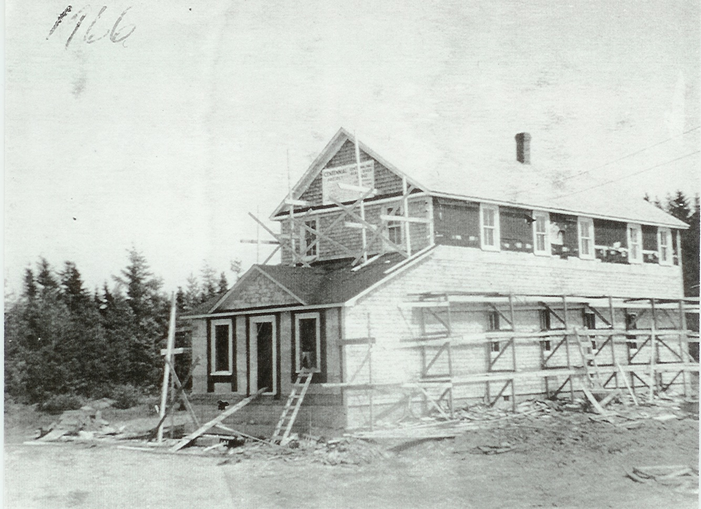
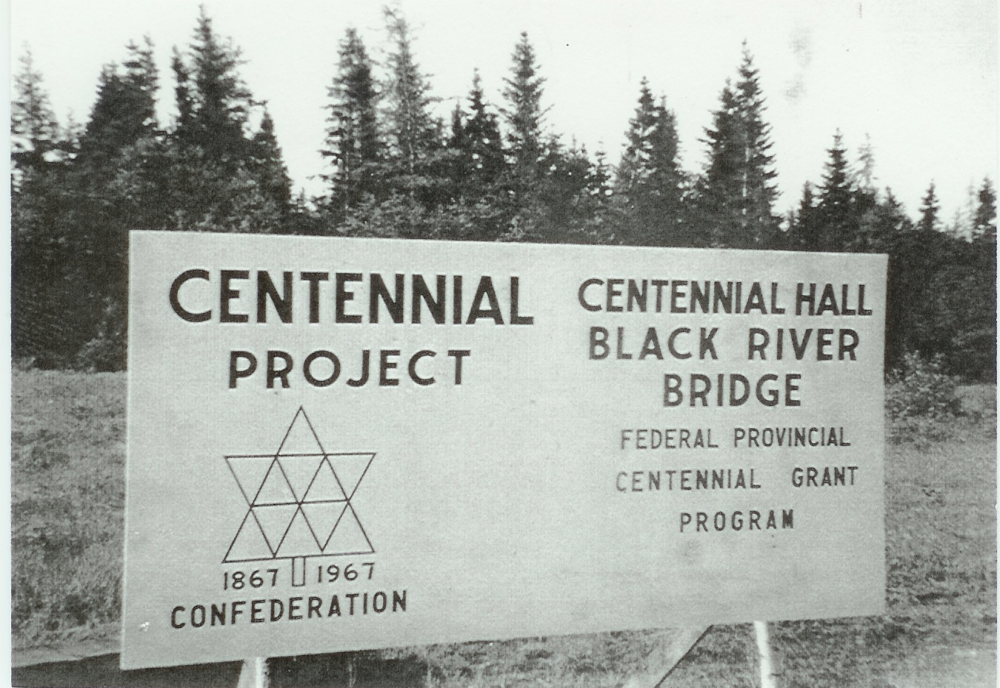
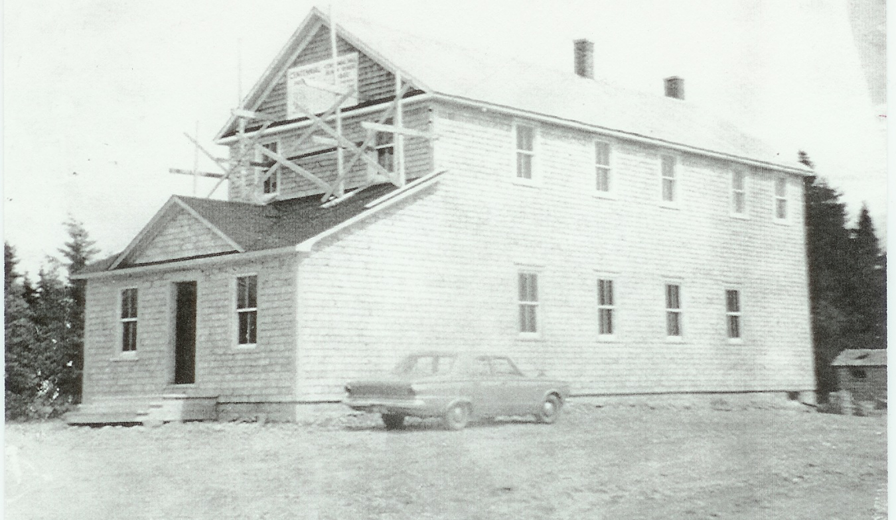
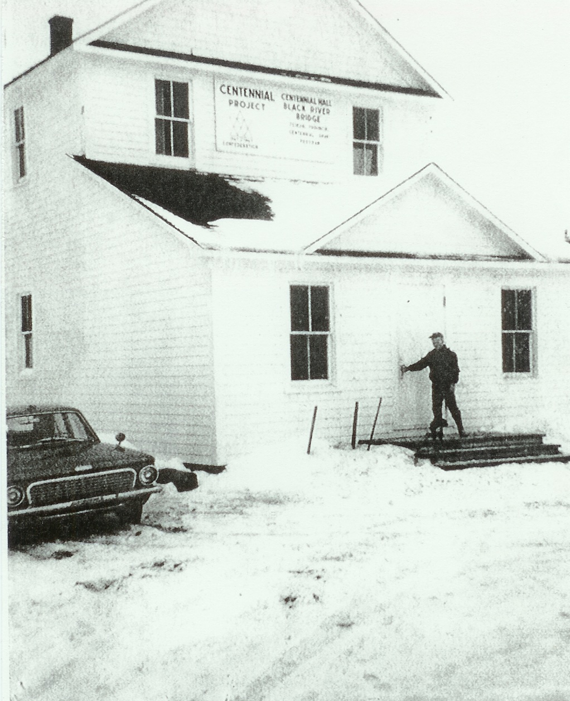

The Family Chronicle
No. 103 August 30, 2005
____________________________________________________________________
Family Chronicle No. 96 gave a brief history of the First Community Hall in Black River, built in 1930. My plea for photos brought no results. Thanks, however, to Everard and Bertie MacLean, I am able to provide some photos of the second one. (See Family Chronicle No. 97)

The second building, erected in 1933, was a two- story structure without the shed on the front; it was added in 1966. .

Is that Everard MacLean standing at the door?
In 1966, to commemorate our 100 years as a country, funds were made available for community projects. The upgrading and additions shown above were the result and the name was changed to the Black River Centennial Hall.


While reading some old Chatham Gazettes recently, I came across a the following references to the Black River Community Hall.
A letter in the Gazette of Monday, July 17, 1933 (BLACK RIVER FARMER WRITES TO THE GAZETTE) included the following paragraphs”
“to relieve the depression in our district the community decided to rebuild the community Hall which was burned to the ground last summer. The plans and specifications were drawn up by the building committee and tenders called for. The contract was awarded to our local contractor Frank MacDougall who was the lowest tenderer.
The inspectors report the work well advanced and in a satisfactory manner. It is all boarded in and the roof shingled. The lumber was supplied by our local sawmills, Fowlie Brothers and John W. MacNaughton.”
On Monday, July 24 a letter appeared with the following heading “PECULIAR THEFT AT BLACK RIVER BR. NEW HALL”. The first paragraph reads as follows:
“In reading a Farmer’s letter in your recent issue and noting what it said about the Community Hall building, I would like to say that there must be someone else building, as there was a man seen on the road one night last week with a load of shingles. And when the carpenters came to work at the hall next morning they found the shingles had all disappeared with the exception of one bundle; also about fifty pounds of shingle nails. The thief seemed to have a considerate streak in him too, as the contractor needed one bunch of shingles to finish the roof of the hall and one bunch was left out of the pile. The new hall is about completed with windows and doors in place.”
February 8, 1861 is known as cold Friday in New Brunswick. It came, apparently, at the end of a long cold spell and fuel supplies became both scarce and expensive. The cold was accompanied by extremely high winds.
The Chronicle is an occasional newsletter published by Don Glendenning and posted on the family website. It is intended to share information about my family, community and the times in which I grew up. While every effort is made to be accurate, errors are likely to occur. Comments, enquiries and information may be sent to 62 Queen Elizabeth Drive, Charlottetown, PEI, C1A 3A9. Tel: 902 892 5859. Email: dglende@auracom.com Web: www.glendenning.net/don